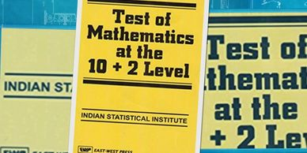
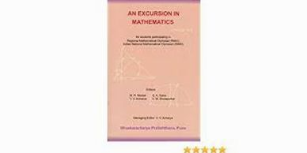
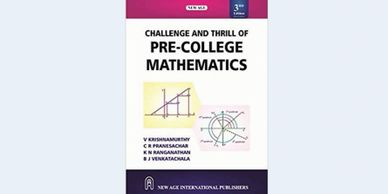

References/Books
Previous Years' Questions

Test of Mathematics at the 10 + 2 level
Indian Statistical Institute
Published by Affiliated East-West Press Pvt. Ltd.
An Excursion in Mathematics

An Excursion in Mathematics
Publisher: Bhaskaracharya Pratishthana (Pune)
Pre-College Mathematics

Challenge and Thrill of Pre-College Mathematics
Author: V Krishnamurthy
Publisher: New Age International